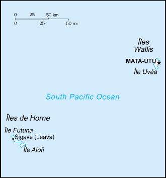
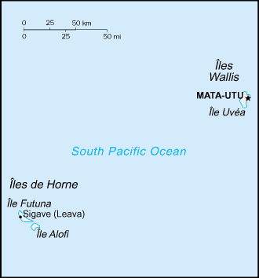

-
Introduction :: Wallis and Futuna
-
Background:The Futuna island group was discovered by the Dutch in 1616 and Wallis by the British in 1767, but it was the French who declared a protectorate over the islands in 1842, and took official control of them between 1886 and 1888. Notably, Wallis and Futuna was the only French colony to side with the Vichy regime during World War II, a phase that ended in May of 1942 with the arrival of 2,000 American troops. In 1959, the inhabitants of the islands voted to become a French overseas territory and officially assumed that status in 1961. In 2003, Wallis and Futuna's designation changed to that of an overseas collectivity.
-
Geography :: Wallis and Futuna
-
Location:Oceania, islands in the South Pacific Ocean, about two-thirds of the way from Hawaii to New ZealandGeographic coordinates:13 18 S, 176 12 WMap references:OceaniaArea:total: 142 sq kmland: 142 sq kmwater: 0 sq km
note: includes Ile Uvea (Wallis Island), Ile Futuna (Futuna Island), Ile Alofi, and 20 islets
country comparison to the world: 221Area - comparative:1.5 times the size of Washington, DCLand boundaries:0 kmCoastline:129 kmMaritime claims:territorial sea: 12 nmexclusive economic zone: 200 nmClimate:tropical; hot, rainy season (November to April); cool, dry season (May to October); rains 250-300 cm per year (80% humidity); average temperature 26.6 degrees CelsiusTerrain:volcanic origin; low hillsElevation:0 m lowest point: Pacific Ocean522 highest point: Mont Singavi (on Futuna)Natural resources:NEGLLand use:agricultural land: 42.8% (2011 est.)arable land: 7.1% (2011 est.) / permanent crops: 35.7% (2011 est.) / permanent pasture: 0% (2011 est.)forest: 41.9% (2011 est.)other: 15.3% (2011 est.)Irrigated land:0 sq km (2012)Natural hazards:cyclones; tsunamisEnvironment - current issues:deforestation (only small portions of the original forests remain) largely as a result of the continued use of wood as the main fuel source; as a consequence of cutting down the forests, the mountainous terrain of Futuna is particularly prone to erosion; there are no permanent settlements on Alofi because of the lack of natural freshwater resources; lack of soil fertility on the islands of Uvea and Futuna negatively impacts agricultural producitivityGeography - note:both island groups have fringing reefs; Wallis contains several prominent crater lakes -
People and Society :: Wallis and Futuna
-
Population:15,763 (July 2018 est.)country comparison to the world: 221Nationality:noun: Wallisian(s), Futunan(s), or Wallis and Futuna Islandersadjective: Wallisian, Futunan, or Wallis and Futuna IslanderEthnic groups:PolynesianLanguages:Wallisian (indigenous Polynesian language) 58.9%, Futunian 30.1%, French (official) 10.8%, other 0.2% (2003 census)Religions:Roman Catholic 99%, other 1%Age structure:0-14 years: 21.28% (male 1,749 /female 1,606)15-24 years: 15.87% (male 1,336 /female 1,165)25-54 years: 42.65% (male 3,391 /female 3,332)55-64 years: 9.76% (male 752 /female 787)65 years and over: 10.44% (male 782 /female 863) (2018 est.)population pyramid:
 The World Factbook Field Image ModalAustralia - Oceania :: Wallis and Futuna Print
The World Factbook Field Image ModalAustralia - Oceania :: Wallis and Futuna Print Image DescriptionThis is the population pyramid for Wallis and Futuna. A population pyramid illustrates the age and sex structure of a country's population and may provide insights about political and social stability, as well as economic development. The population is distributed along the horizontal axis, with males shown on the left and females on the right. The male and female populations are broken down into 5-year age groups represented as horizontal bars along the vertical axis, with the youngest age groups at the bottom and the oldest at the top. The shape of the population pyramid gradually evolves over time based on fertility, mortality, and international migration trends.
Image DescriptionThis is the population pyramid for Wallis and Futuna. A population pyramid illustrates the age and sex structure of a country's population and may provide insights about political and social stability, as well as economic development. The population is distributed along the horizontal axis, with males shown on the left and females on the right. The male and female populations are broken down into 5-year age groups represented as horizontal bars along the vertical axis, with the youngest age groups at the bottom and the oldest at the top. The shape of the population pyramid gradually evolves over time based on fertility, mortality, and international migration trends.
For additional information, please see the entry for Population pyramid on the Definitions and Notes page under the References tab.Median age:total: 32.8 yearsmale: 31.9 yearsfemale: 34 years (2018 est.)country comparison to the world: 98Population growth rate:0.3% (2018 est.)country comparison to the world: 171Birth rate:13 births/1,000 population (2018 est.)country comparison to the world: 151Death rate:5.5 deaths/1,000 population (2018 est.)country comparison to the world: 178Net migration rate:-4.7 migrant(s)/1,000 population (2017 est.)note: there has been steady emigration from Wallis and Futuna to New Caledonia
country comparison to the world: 188Urbanization:urban population: 0% of total population (2018)rate of urbanization: 0% annual rate of change (2015-20 est.)Major urban areas - population:1,000 MATA-UTU (capital) (2018)Sex ratio:at birth: 1.05 male(s)/female (2017 est.)0-14 years: 1.09 male(s)/female (2017 est.)15-24 years: 1.11 male(s)/female (2017 est.)25-54 years: 1.01 male(s)/female (2017 est.)55-64 years: 0.97 male(s)/female (2017 est.)65 years and over: 0.92 male(s)/female (2017 est.)total population: 1.03 male(s)/female (2017 est.)Infant mortality rate:total: 4.3 deaths/1,000 live births (2018 est.)male: 4.5 deaths/1,000 live births (2018 est.)female: 4 deaths/1,000 live births (2018 est.)country comparison to the world: 187Life expectancy at birth:total population: 80 years (2018 est.)male: 77 years (2018 est.)female: 83.1 years (2018 est.)country comparison to the world: 46Total fertility rate:1.72 children born/woman (2018 est.)country comparison to the world: 169Physicians density:1.1 physicians/1,000 population (2008)Sanitation facility access:improved: rural: 96% of population (2008 est.)total: 96% of population (2008 est.)unimproved: rural: 4% of population (2008 est.)total: 4% of population (2008 est.)HIV/AIDS - adult prevalence rate:NAHIV/AIDS - people living with HIV/AIDS:NAHIV/AIDS - deaths:NA -
Government :: Wallis and Futuna
-
Country name:conventional long form: Territory of the Wallis and Futuna Islandsconventional short form: Wallis and Futunalocal long form: Territoire des Iles Wallis et Futunalocal short form: Wallis et Futunaformer: Hoorn Islands is the former name of the Futuna Islandsetymology: Wallis Island is named after British Captain Samuel WALLIS who discovered it in 1767; Futuna is derived from the native word "futu," which is the name of the fish-poison tree found on the islandDependency status:overseas collectivity of FranceGovernment type:parliamentary democracy (Territorial Assembly); overseas collectivity of FranceCapital:name: Mata-Utu (on Ile Uvea)geographic coordinates: 13 57 S, 171 56 Wtime difference: UTC+12 (17 hours ahead of Washington, DC, during Standard Time)Administrative divisions:3 administrative precincts (circonscriptions, singular - circonscription) Alo, Sigave, UveaIndependence:none (overseas collectivity of France)National holiday:Bastille Day, 14 July (1789)Constitution:history: 4 October 1958 (French Constitution)amendments: French constitution amendment procedures applyLegal system:French civil lawCitizenship:see FranceSuffrage:18 years of age; universalJudicial branch:highest courts: Court of Assizes or Cour d'Assizes (consists of 1 judge; court hears primarily serious criminal cases); note - appeals beyond the Court of Assizes are heard before the Court of Appeal or Cour d'Appel (in Noumea, New Caledonia)judge selection and term of office: NAsubordinate courts: courts of first instance; labor court; note - justice generally administered under French law by the high administrator, but the 3 traditional kings administer customary law, and there is a magistrate in Mata-UtuExecutive branch:chief of state: President Emmanuel MACRON (since 14 May 2017); represented by High Administrator Jean-Francis TREFFEL (since 6 February 2017)head of government: President of the Territorial Assembly David VERGE (since 4 April 2017)cabinet: Council of the Territory appointed by the high administrator on the advice of the Territorial Assemblyelections/appointments: French president elected by absolute majority popular vote in 2 rounds if needed for a 5-year term (eligible for a second term); high administrator appointed by the French president on the advice of the French Ministry of the Interior; the presidents of the Territorial Government and the Territorial Assembly elected by assembly members; 20 December Thierry Queffelec is appointed high administrator and will take office 7 January 2019
note: there are 3 traditional kings with limited powers
Legislative branch:description: unicameral Territorial Assembly or Assemblee Territoriale (20 seats - Wallis 13, Futuna 7; members directly elected in multi-seat constituencies by party-list proportional representation vote to serve 5-year terms)
Wallis and Futuna indirectly elects 1 senator to the French Senate by an electoral college by absolute majority vote in 2 rounds if needed for a 6-year term, and 1 deputy directly elected to the French National Assembly by absolute majority vote for a 5-year termelections: Territorial Assembly - last held on 26 March 2017 (next to be held in March 2022)election results: Territorial Assembly - percent of vote by party - NA; seats by party - 2 members are elected from the list Fia gaue fakatahi kihe kaha'u e lelei and 1 each from 18 other lists; composition - men 14, women 6, percent of women 30%French Senate - last held on 28 September 2014 (next to be held by September 2020) French National Assembly - last held on 11 June 2017 (next to be held in June 2022) French Senate - 1 seat: LR 1 French National Assembly - 1 seat: independent 1Political parties and leaders:Left Radical Party or PRG [Sylvia PINEL] (formerly Radical Socialist Party or PRS and the Left Radical Movement or MRG)
Lua Kae Tahi (Giscardians)
Rally for Wallis and Futuna-The Republicans (Rassemblement pour Wallis and Futuna) or RPWF-LR [Clovis LOGOLOGOFOLAU]
Socialist Party or PS
Taumu'a Lelei [Soane Muni UHILA]
Union Pour la Democratie Francaise or UDFInternational organization participation:PIF (observer), SPC, UPUDiplomatic representation in the US:none (overseas collectivity of France)Diplomatic representation from the US:none (overseas collectivity of France)Flag description:unofficial, local flag has a red field with four white isosceles triangles in the middle, representing the three native kings of the islands and the French administrator; the apexes of the triangles are oriented inward and at right angles to each other; the flag of France, outlined in white on two sides, is in the upper hoist quadrantnote: the design is derived from an original red banner with a white cross pattee that was introduced in the 19th century by French missionaries; the flag of France is used for official occasions
National symbol(s):red saltire (Saint Andrew's Cross) on a white square on a red field; national colors: red, whiteNational anthem:note: as a territory of France, "La Marseillaise" is official (see France)
-
Economy :: Wallis and Futuna
-
Economy - overview:
The economy is limited to traditional subsistence agriculture, with about 80% of labor force earnings coming from agriculture (coconuts and vegetables), livestock (mostly pigs), and fishing. However, roughly 70% of the labor force is employed in the public sector, although only about a third of the population is in salaried employment.
Revenues come from French Government subsidies, licensing of fishing rights to Japan and South Korea, import taxes, and remittances from expatriate workers in New Caledonia. France directly finances the public sector and health-care and education services. It also provides funding for key development projects in a range of areas, including infrastructure, economic development, environmental management, and health-care facilities.
A key concern for Wallis and Futuna is an aging population with consequent economic development issues. Very few people aged 18-30 live on the islands due to the limited formal employment opportunities. Improving job creation is a current priority for the territorial government.
GDP (purchasing power parity):$60 million (2004 est.)country comparison to the world: 225GDP (official exchange rate):$195 million (2005) (2005)GDP - real growth rate:NA
GDP - per capita (PPP):$3,800 (2004 est.)country comparison to the world: 181GDP - composition, by end use:household consumption: 26% (2005)government consumption: 54% (2005)GDP - composition, by sector of origin:agriculture: NAindustry: NAservices: NAAgriculture - products:coconuts, breadfruit, yams, taro, bananas; pigs, goats; fishIndustries:copra, handicrafts, fishing, lumberIndustrial production growth rate:NALabor force:4,482 (2013)country comparison to the world: 223Labor force - by occupation:agriculture: 74%industry: 3%services: 23% (2015 est.)Unemployment rate:8.8% (2013 est.)12.2% (2008 est.)country comparison to the world: 126Population below poverty line:NABudget:revenues: 32.54 million NA (2015 est.)expenditures: 34.18 million NA (2015 est.)Taxes and other revenues:16.7% (of GDP) NA (2015 est.)country comparison to the world: 175Budget surplus (+) or deficit (-):-0.8% (of GDP) NA (2015 est.)country comparison to the world: 70Public debt:5.6% of GDP (2004 est.)note: offical data; data cover general government debt and include debt instruments issued (or owned) by government entities other than the treasury; the data include treasury debt held by foreign entities; the data include debt issued by subnational entities, as well as intragovernmental debt; intragovernmental debt consists of treasury borrowings from surpluses in the social funds, such as for retirement, medical care, and unemployment; debt instruments for the social funds are not sold at public auctions
country comparison to the world: 204Fiscal year:calendar yearInflation rate (consumer prices):0.9% (2015)2.8% (2005)country comparison to the world: 48Exports:$47,450 (2004 est.)country comparison to the world: 222Exports - commodities:copra, chemicals, construction materialsImports:$61.17 million (2004 est.)country comparison to the world: 219Imports - commodities:chemicals, machinery, consumer goodsDebt - external:$3.67 million (2004)country comparison to the world: 201Stock of direct foreign investment - at home:(31 December 2009 est.)Exchange rates:Comptoirs Francais du Pacifique francs (XPF) per US dollar -110.2 (2015 est.)89.8 (2014 est.)89.85 (2013 est.)90.56 (2012 est.) -
Communications :: Wallis and Futuna
-
Telephones - fixed lines:total subscriptions: 3,132 (July 2016 est.)subscriptions per 100 inhabitants: 20 (July 2016 est.)country comparison to the world: 208Telephone system:international: country code - 681Broadcast media:the publicly owned French Overseas Network (RFO), which broadcasts to France's overseas departments, collectivites, and territories, is carried on the RFO Wallis and Fortuna TV and radio stations (2008)Internet country code:.wfInternet users:total: 3,450 (July 2016 est.)percent of population: 22.1% (July 2016 est.)country comparison to the world: 218
-
Transportation :: Wallis and Futuna
-
Airports:2 (2013)country comparison to the world: 209Airports - with paved runways:total: 2 (2013)1,524 to 2,437 m: 1 (2013)914 to 1,523 m: 1 (2013)Ports and terminals:major seaport(s): Leava, Mata-Utu
-
Military and Security :: Wallis and Futuna
-
Military - note:defense is the responsibility of France
-
Transnational Issues :: Wallis and Futuna
-
Disputes - international:none
Australia - Oceania ::
Wallis and Futuna